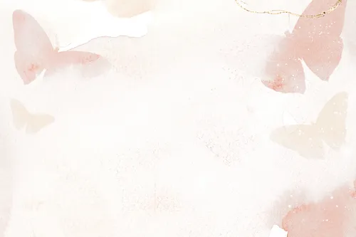

GOOD READS

“All our dreams can come true,
if we have the courage to pursue them.”
—Walt Disney
“The secret of getting ahead is
getting started.”
—Mark Twain

“I’ve missed more than 9,000 shots
in my career. I’ve lost almost 300 games.
26 times I’ve been trusted to take
the game winning shot and missed. I’ve
failed over and over and over again
in my life, and that is why I succeed.”
—Michael Jordan
“Only the paranoid survive.”
—Andy Grove

“It’s hard to beat a person
who never gives up.”
—Babe Ruth
“I wake up every morning and
think to myself, ‘How far
can I push this company in the next 24
hours.’”
—Leah Busque
“If people are doubting how
far you can go, go so far that
you can’t hear them anymore.”
—Michele Ruiz

“Write it. Shoot it. Publish it.
Crochet it. Sauté it. Whatever. MAKE.”
—Joss Whedon
“Fairy tales are more than true:
not because they tell us that dragons exist,
but because they tell us that dragons can be beaten.”
―Neil Gaiman